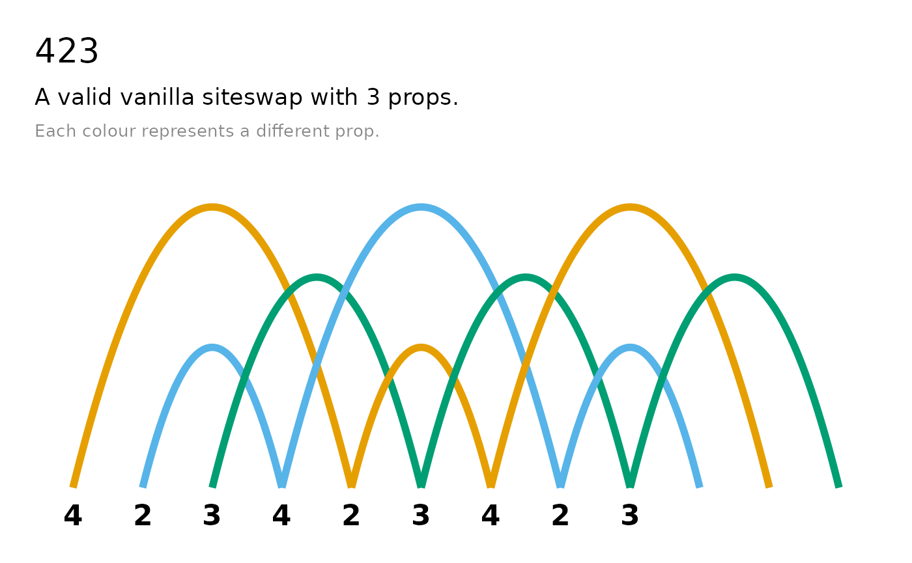
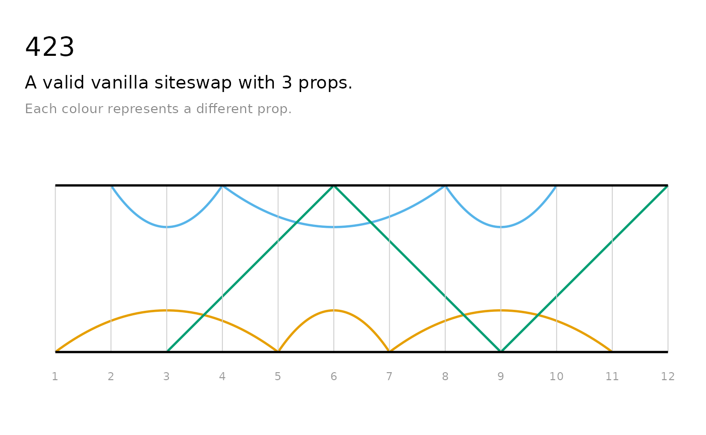
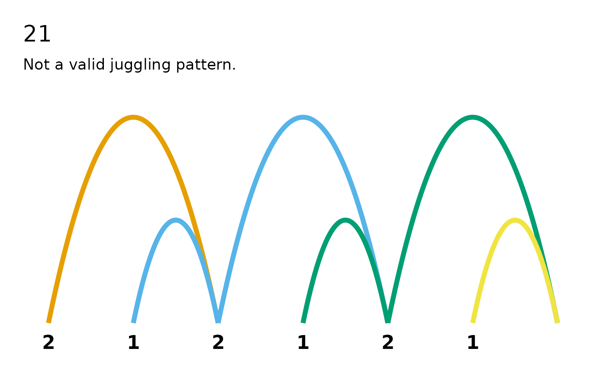
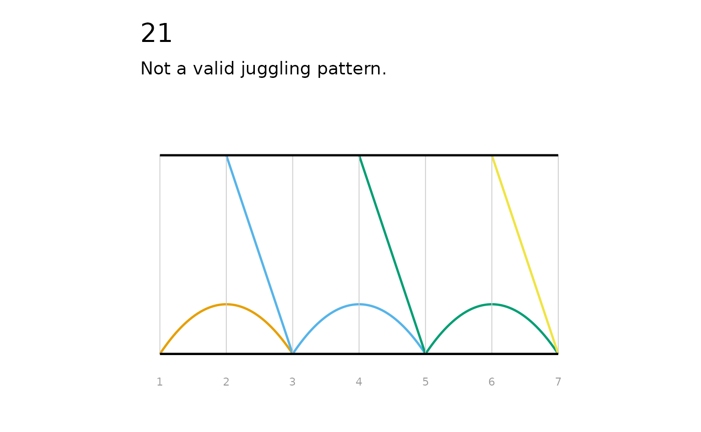
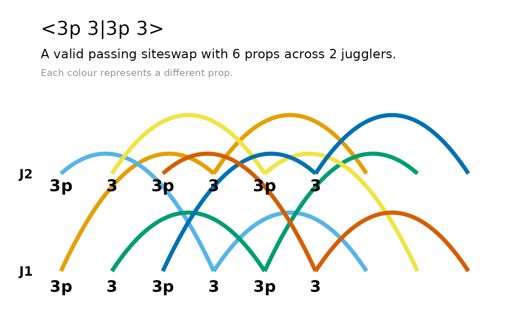
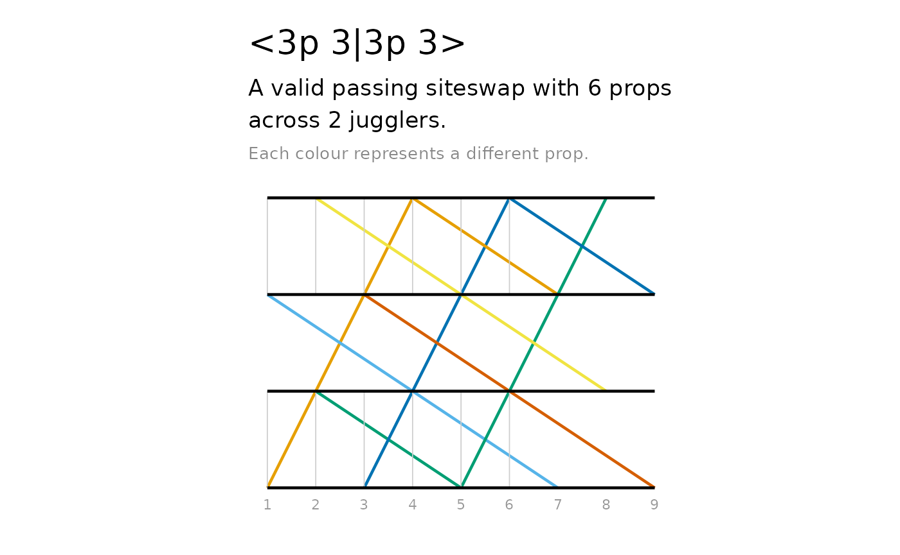

Jugglers have a notation for their patterns. A 3-ball cascade — the
first pattern most jugglers learn — is written as 3. Five
balls is 5. That trick where one ball sails high while the
other two move beneath it is 423. The notation is called
siteswap, and each number encodes how many beats until that prop needs
to come back down. jugglr lets you create, validate, and visualise
siteswap patterns in R.
Vanilla siteswap
The simplest form is vanilla siteswap: one prop thrown per
beat, hands alternating. Create a pattern with
siteswap():
siteswap("3")
#> ✔ '3' is valid vanilla siteswap
#> ℹ It uses 3 props
#> ℹ It is symmetrical with period 1The print method tells you four things: whether the pattern is valid, how many props it requires, its period (how many beats before it repeats), and whether it’s symmetrical — meaning both hands do the same thing, just offset in time.
Here’s a trickier pattern:
ss_423 <- siteswap("423")
ss_423
#> ✔ '423' is valid vanilla siteswap
#> ℹ It uses 3 props
#> ℹ It is symmetrical with period 3Still three props, period 3. The 4 is a high self-throw that buys you a moment, the 2 is a low hold, and the 3 is a standard cascade throw. The pattern starts to take shape even from the numbers. And for the jugglers working towards five balls:
siteswap("5")
#> ✔ '5' is valid vanilla siteswap
#> ℹ It uses 5 props
#> ℹ It is symmetrical with period 1Invalid patterns
Not every sequence of numbers makes a jugglable pattern. jugglr checks validity at construction:
ss_21 <- siteswap("21")
ss_21
#> ✖ '21' is not a valid juggling pattern
#> ℹ The throws don't average to a whole number
#> ℹ Two or more throws land on the same beat (collision)Two problems, both reported separately. The average of 2 and 1 is 1.5, which would require 1.5 props — impossible. And even setting that aside, two throws would land on the same beat: a collision. The diagrams in the visualising patterns section below make this concrete.
This is genuinely useful when you’re inventing patterns. Check the sequence before picking up the clubs.
Other notation types
Vanilla siteswap is one prop per beat from alternating hands. jugglr handles four more notation types for more complex juggling styles.
Synchronous siteswap
Both hands throw at the same time, written as pairs in parentheses:
siteswap("(4,4)")
#> ✔ '(4,4)' is valid synchronous siteswap
#> ℹ It uses 4 props
#> ℹ It is symmetrical with period 2An x suffix on a throw value marks it as crossing to the
other side. The * shorthand indicates the pattern
alternates between two states — jugglr expands it into the full
sequence:
siteswap("(4,2x)*")
#> ✔ '(4,2x)*' is valid synchronous siteswap
#> ℹ Full sequence: (4,2x)(2x,4)
#> ℹ It uses 3 props
#> ℹ It is symmetrical with period 4Multiplex siteswap
Multiple props thrown from one hand simultaneously, with square brackets grouping them:
siteswap("[43]1")
#> ✔ '[43]1' is valid multiplex siteswap
#> ℹ It uses 4 props
#> ℹ It is asymmetrical with period 2Synchronous multiplex siteswap
Both hands throwing at the same time, with multiplex groups:
siteswap("(4,[42x])*")
#> ✔ '(4,[42x])*' is valid synchronous multiplex siteswap
#> ℹ Full sequence: (4,[42x])([42x],4)
#> ℹ It uses 5 props
#> ℹ It is symmetrical with period 4Passing siteswap
Patterns for multiple jugglers. The <A|B> notation
separates each juggler’s sequence; p on a throw value marks
a pass to the other juggler:
siteswap("<3p 3|3p 3>")
#> ✔ '<3p 3|3p 3>' is valid passing siteswap
#> ℹ It uses 6 props across 2 jugglers
#> ℹ It is asymmetrical with period 2Six props between two jugglers, each passing on every other throw.
Experienced passers often prefer fractional notation, where a
.5 on a throw indicates it’s a pass:
siteswap("<4.5 3 3 | 3 4 3.5>")
#> ✔ '<4.5 3 3 | 3 4 3.5>' is valid passing siteswap
#> ℹ It uses 7 props across 2 jugglers
#> ℹ It is symmetrical with period 3Visualising patterns
A sequence of numbers only tells you so much about a pattern. jugglr provides two diagrams, each revealing different aspects of the same sequence.
Both timeline() and ladder() return ggplot2
objects, so you can customise them further with standard ggplot2
functions.
Timeline
timeline() draws arcs: each arc represents one throw,
with height proportional to the throw value, colour-coded by prop. It’s
roughly what the pattern looks like from the side.
timeline(ss_423)
Follow any single colour to track one prop through the pattern. Each arc shows when it was thrown, how high, and when it lands.
Ladder diagram
ladder() shows the schedule: beats across the axis, with
lines connecting throws to catches. Straight lines are self-throws;
crossing lines go to the other hand.
ladder(ss_423)
Where the timeline shows the shape of the pattern in the air, the ladder shows the mechanics hand-to-hand.
Invalid patterns
Both diagrams become most instructive when something goes wrong:
timeline(ss_21)
ladder(ss_21)
The collision is visible: two arcs land on the same beat, two lines converge at the same point. The colours show where props appear out of nowhere or need to be in two places at once. This is a useful debugging tool when an invented pattern doesn’t feel right — the diagram tells you exactly where it breaks.
Passing patterns
Both diagrams extend naturally to passing patterns, with one lane per juggler:

ladder(ss_pass)
Passes appear as arcs (or lines) that cross between the juggler lanes.
A few options
The n_cycles argument controls how many repetitions to
show — the default of 3 is usually enough to see the full structure, but
increase it to trace individual props further. ladder()
also accepts direction = "vertical" if you prefer that
orientation.
The raw data
If you want to build your own visualisation or work directly with the
numbers, throw_data() returns the underlying data
frame:
throw_data(ss_423)
#> beat hand throw catch_beat catch_hand prop
#> 1 1 0 4 5 0 1
#> 2 2 1 2 4 1 2
#> 3 3 0 3 6 1 3
#> 4 4 1 4 8 1 2
#> 5 5 0 2 7 0 1
#> 6 6 1 3 9 0 3
#> 7 7 0 4 11 0 1
#> 8 8 1 2 10 1 2
#> 9 9 0 3 12 1 3One row per throw: when it was thrown, which hand, the throw value, when and where it lands, and which prop it belongs to. This is the same data that drives the diagrams.
Animation
jugglr can also produce animated GIFs of patterns via the JugglingLab server. Here’s
423 animated with three colours:

The animate vignette covers the full range of options:
colour modes, prop types, speed controls, and how to save animations to
disk for use in documents.